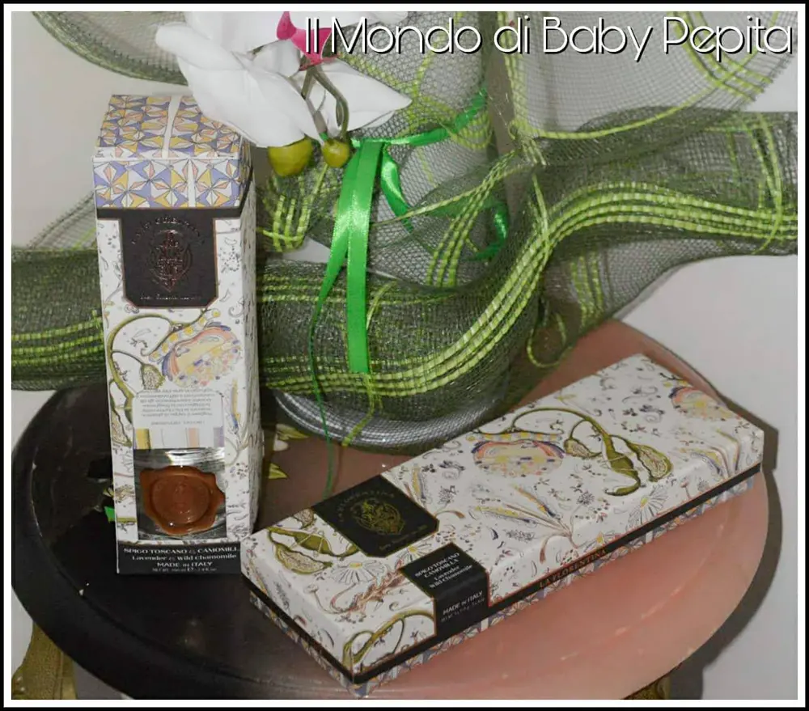
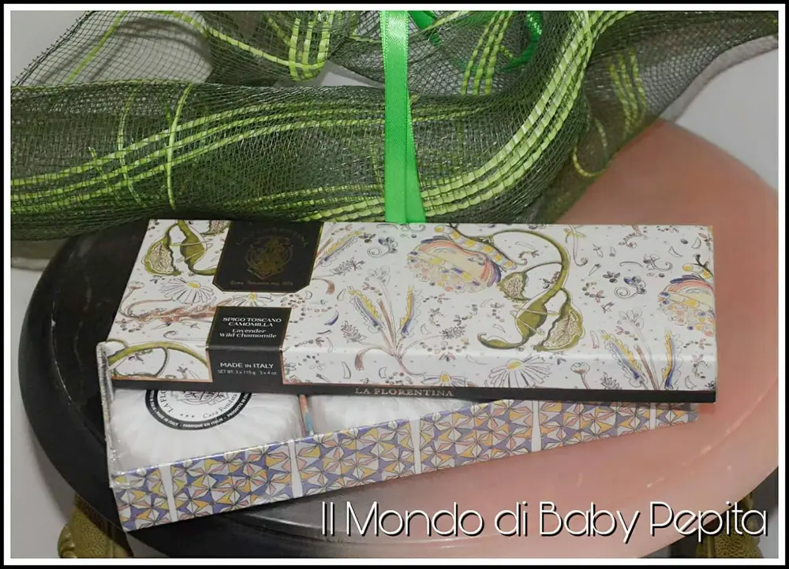
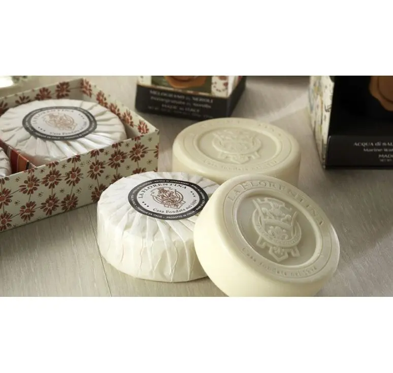
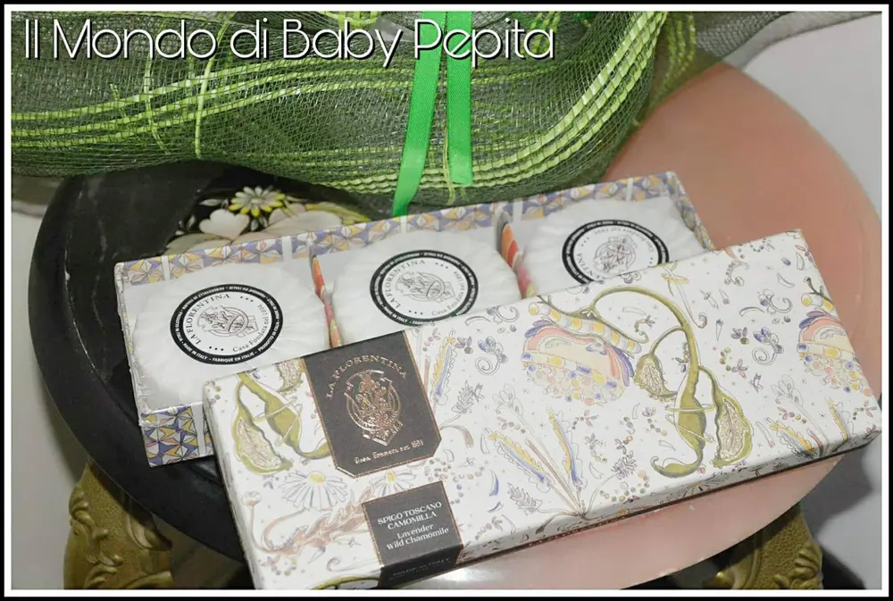
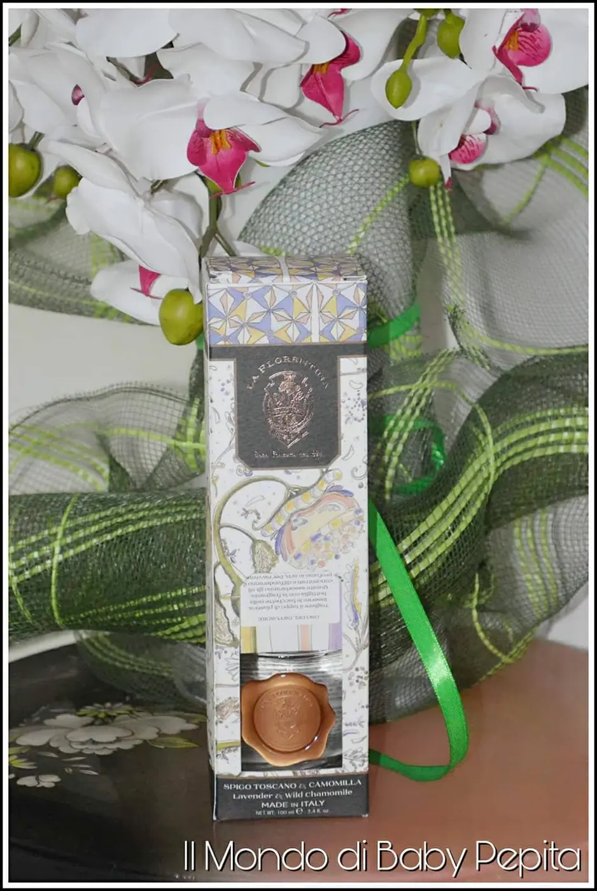
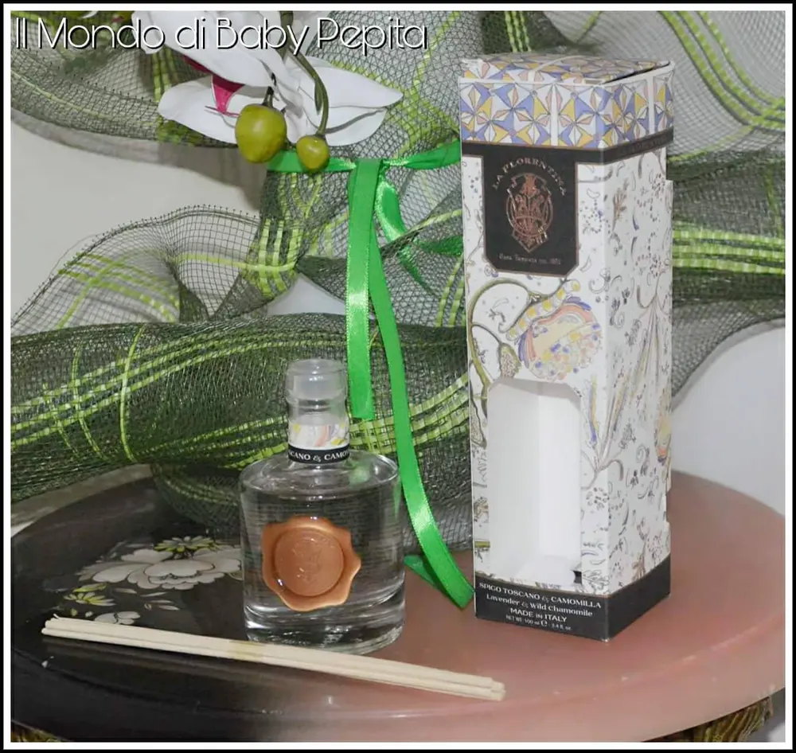

Saponi artigianali: LA FLORENTINA
Saponi artigianali: Ancora in ambito di idee regalo, oggi voglio parlarvi di un'azienda italiana, LA FLORENTINA, precisamente nasce a Firenze nel lontano 1894. Tutto questo nasce dalla passione di antichi maestri saporieri.
Ricette di profumo preparate dal suo fondatore Alighiero Campostrini, ad oggi le sue ricette sono gelosamente custodite.
Come nel 1894, anche oggi l'azienda si dedica alla cura dei materiali, all'uso di ingredienti naturali tra cui l'olio d'oliva e burro di Karitè, e questo rende La Florentina un'azienda di saponi speciali su tutto il territorio toscano. Ancora oggi la lavorazione è accurata e artigianale, per una clientela raffinata e di classe.
Infatti, oltre ad essere un sapone morbido ed idratante per la pelle, è anche bello da tenere in una sala da bagno in quanto ha un disegn del tutto lussuoso con il marchio inciso direttamente sul prodotto.
Ci sono diverse collezioni con diverse fragranze, completa ognuna da diffusore di fragranza, room spray e candela.
Ogni collezione, che potrete vedere QUI, ha un disegn diverso e tutti molto eleganti.

La fragranza che ho provato io è
AGRUMI - LEGNI DI CEDRO

Ciò di cui ho avuto il piacere di provare è una scatola rettangolare fantastica ed elegante, con design sui toni arancione/marrone.
All'interno della scatola ci sono 3 saponi, rotondi di 125g. ognuno è incarnato con una carta velina e con l'adesivo del marchio di fabbrica.


Aprendo la carta, possiamo notare che anche il sapone in se è marchiato con il logo dell'azienda.
Credo sia di una finezza unica questa scatola.
DIFFUSSORE CON BACCHETTE:
Nel pacchetto c'è anche un diffusore con bacchette in legno (100ml) di profumo agli agrumi. È un recipiente di vetro e si mettono le bacchette sopra, in modo che le bacchette inumidendosi del profumo emanana il profumo in tutta la stanza.

È un'idea stupenda per un regalo di classe e sicuramente non banale.

Per il prezzo c'è bisogno di contattare direttamente l'azienda.